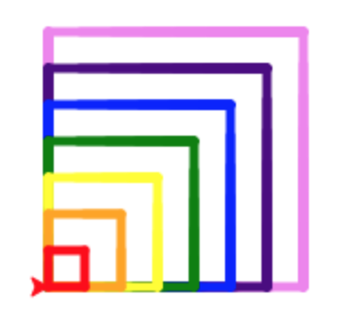
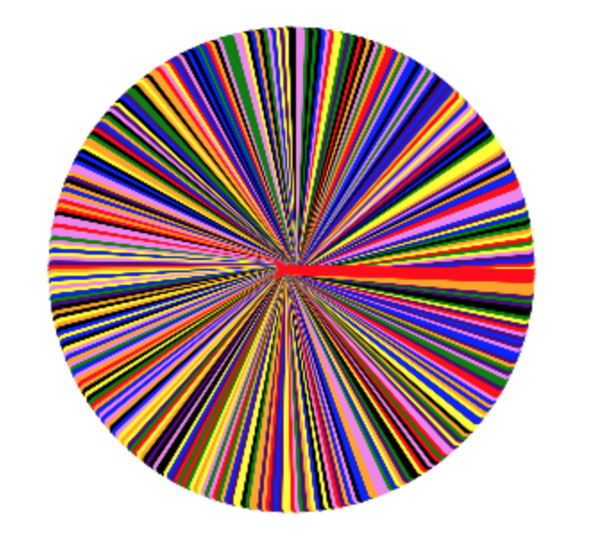

Bringing it Together
Table of Contents
Grey overlay
Pink
Green
Blue
Cream
Liliac
Purple
Yellow
1 Turtle Power
Research It
- You've covered all the basics; you can draw nice patterns, use variables, create functions, use IF and design original code.
- Programmers don't all know every single command that the languages they use and libraries (like turtle) contain.
- They often need to look things up on the web to find out ways to solve new problems.
- For instance, it's possible with Python turtle to have the turtle move without drawing a line, so that we can draw things like this:

- Go online, and see if you can discover how to get the turtle to move without having it's 'pen' down on the screen.
- Challenge: See if you can create code to draw the 10-sided shape I made above (with only every other line drawn).
Research It
- There are other things you can discover through experimentation…
import turtle
wn = turtle.Screen()
wn.bgcolor("white")
wn.title("Mystery Command")
tess = turtle.Turtle()
tess.penup()
for n in range(1,11):
tess.color('red')
tess.stamp()
tess.forward(50) # Draw a square in the current colour.
tess.left(360/10)
wn.mainloop()
- What new ideas are used here? A characteristic of a good developer is being able to apply ideas they've learnt in new situations. Could you use the ideas in the program above to make this pattern (there are 50 turtle stamps here and each is 5 units in front of the one before it), or one like it:

2 Assessment
Badge It
- Try and create as many of these patterns as you can for yourself:
Challenge 1: Swirly-Whirly

- A 720 degree spiral.
Challenge 2: Spikey Star

- 20 spikes that are 50 units long
Challenge 3: Tipsy Turtle

- A 'tipsy' turtle that moves forward at
randombetween 1-5 units, then turns right a random amount between -45 and 45 degrees. You'll need to research and use the random library, and the randrange function to be able to do this. See this link for a short example.
Challenge 4: Pretty Pentagram

- A pentagram (the angles will take some thinking about).
Challenge 5: Perplexing Patterns

- A series of shapes, each with one more side than the last
Challenge 6: Shrinking Squares

- A set of incrementally smaller squares, each a different colour.
Challenge 7: Stunning Circle

- A circle made from 360 straight lines, each of which is a random colour.
- To help you develop code for your solutions, this trinket may be of some help.
Badge It
- Silver: Create any three patterns
- Gold: Create any five patterns
- Platinum: Create all the patterns
- Take a screenshot of each pattern you complete, and upload it along with a text file containing its code it to collect the badge.